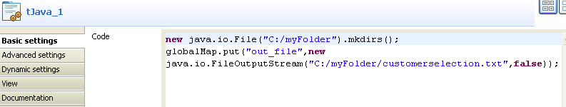
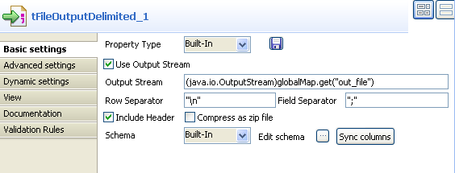

|
Famille de composant |
File/Output | |
|
Fonction |
Le composant tFileOutputDelimited transmet des données vers un fichier délimité. | |
|
Objectif |
Ce composant écrit un fichier délimité contenant des données organisées en fonction du schéma défini. | |
|
Basic settings |
Property type |
Peut être Built-in ou Repository. |
|
|
|
Built-in : Propriétés utilisées ponctuellement. |
|
|
|
Repository : Sélectionnez le fichier de propriétés du composant. Les champs suivants sont alors pré-remplis à l’aide des données collectées. |
|
|
Use Output Stream |
Cochez la case pour traiter le flux de données qui vous intéresse. Une fois cochée, le champ Output Stream s’affiche et vous pouvez saisir le flux de données souhaité. Le flux de données à traiter doit être ajouté au flux afin que ce composant récupère ces données via la variable représentative correspondante. Cette variable peut être prédéfinie dans votre Studio ou fournie par le contexte ou les composants utilisé(s) avec ce composant. Sinon, vous pouvez la définir manuellement et l’utiliser selon votre Job, par exemple à l’aide d’un tJava ou d’un tJavaFlex. Afin d’éviter les désagréments de la saisie, vous pouvez sélectionner la variable qui vous intéresse dans la liste d’autocomplétion (Ctrl+Espace) afin de remplir le champ, si cette variable a été correctement définie. Pour plus d’informations concernant l’utilisation d’un flux, consultez la section intitulée « Scénario 2 : Lire les données d’un fichier distant en mode stream ». |
|
|
File name |
Chemin d’accès et nom du fichier de sortie et/ou variable à utiliser. Ce champ est indisponible lorsque vous avez coché la case Use Output Stream. Pour plus d’informations concernant l’utilisation et la définition de variables, consultez leGuide utilisateur de Talend Open Studio. |
|
|
Row Separator |
Chaîne (ex : “\n” sous Unix) séparant les lignes. |
|
|
Field Separator |
Caractère, chaîne ou expression régulière pour séparer les champs du fichier de sortie. |
|
|
Append |
Cochez cette option pour ajouter de nouvelles lignes à la fin du fichier. |
|
|
Include Header |
Cochez cette case pour tenir compte de l’en-tête dans le fichier de sortie. |
|
|
Compress as zip file |
Cochez cette case pour compresser en zip le fichier de sortie. |
|
|
Schema et Edit schema |
Un schéma est une description de lignes, i.e., il définit le nombre de champs qui sont traités et passés au composant suivant. Le schéma est soit local (Built-in), soit distant dans le Repository.. Si vous effectuez des modifications, le schéma passe automatiquement en mode Built-In.
|
|
|
|
Built-in : Le schéma est créé et conservé pour ce composant seulement. Voir également le Guide utilisateur de Talend Open Studio. |
|
|
|
Repository : Le schéma existe déjà et est stocké dans le Repository. Ainsi, il peut être réutilisé dans divers projets et Jobs. Voir également leGuide utilisateur de Talend Open Studio. |
|
|
Sync columns |
Cliquez sur ce bouton pour synchroniser le schéma de sortie avec celui d’entrée. La fonction Sync ne s’affiche que si une connexion de type Row est liée au composant de sortie. |
|
Advanced settings |
Advanced separator (for numbers) |
Cochez cette option pour modifier les séparateurs utilisés pour les nombres : Thousands separator : définissez le séparateur utilisé pour les milliers. Decimal separator : définissez le séparateur utilisé pour les décimaux. |
|
|
CSV options |
Cochez cette case pour prendre en compte les paramètres spécifiques aux fichiers CSV, notamment la manière de protéger les caractères dans le champ Escape char et le type de guillemet dans le champ Enclosure. |
|
|
Create directory if not exists |
Cette case est cochée par défaut. Cette option permet de créer le dossier contenant le fichier de sortie s’il n’existe pas déjà. |
|
|
Split output in several files |
Si le fichier délimité en sortie est volumineux, vous pouvez le scinder en plusieurs fichiers. Rows in each output file : saisissez le nombre de lignes pour chaque fichier de sortie. |
|
|
Custom the flush buffer size |
Cochez cette case pour personnaliser le nombre de lignes à écrire avant de vider le tampon. Row Number : Nombre de lignes à écrire avant de vider le tampon. |
|
|
Output in row mode |
Cochez cette case pour que l’écriture se fasse en mode ligne. |
|
|
Encoding |
Sélectionnez l’encodage à partir de la liste ou sélectionnez Custom et définissez-le manuellement. Ce champ est obligatoire pour la manipulation des données de base de données. |
|
|
Don’t generate empty file |
Cochez cette case pour empêcher la génération d’un fichier vide. |
|
|
tStatCatcher Statistics |
Cochez cette case pour collecter les métadonnées de process du Job, aussi bien au niveau du Job qu’au niveau de chaque composant. |
|
Utilisation |
Utilisez ce composant pour écrire dans un fichier délimité des données récupérées d’autres composants à l’aide d’une connexion de type Row et séparer les champs à l’aide d’un séparateur. | |
|
Limitation |
n/a | |
Ce scénario est constitué de trois composants et a pour objectif d’extraire certaines données d’un fichier contenant des informations sur les clients (customers) puis de les écrire dans un fichier délimité en sortie.
Dans l’exemple suivant, vous avez enregistré les informations de connexion et les métadonnées dans le Repository afin de faciliter leur réutilisation. Pour plus d’informations sur comment centraliser les données de connexion et autres métadonnées d’un fichier dans le Repository, consultez le Guide Utilisateur Talend Integration Suite Studio.
Dans le Repository, ouvrez le nœud File Delimited de la catégorie Metadata. Cliquez sur la métadonnée customers, et déposez-le dans l’espace de modélisation graphique. Une boîte de dialogue s’ouvre et vous demande quel type de composant vous voulez déposer.
Cliquez sur tFileInputDelimited puis sur OK Un composant tFileInputDelimited contenant le nom de votre schéma d’entrée s’affiche dans l’espace de modélisation graphique.
Déposez un composant tMap et un composant tFileOutputDelimited de la Palette dans l’espace de modélisation graphique.
Reliez les composants à l’aide d’un lien Row > Main.
Double-cliquez sur le composant afin d’afficher la vue Component, afin de paramétrer les informations de connexion et définir le schéma des données d'entrée.
Si vous sélectionnez Repository dans la liste Property Type, les champs suivants seront automatiquement renseignés à partir des informations centralisées dans le Repository. Si vous sélectionnez le mode Built-In, renseignez les champs manuellement.
Cliquez sur le bouton [...] correspondant au champ File Name. Dans la boîte de dialogue de sélection, parcourez le système de fichiers et sélectionnez le fichier d’entrée, dans cet exemple: customer.csv.
![[Avertissement]](../images/warning.png) | |
Si le chemin d’accès du fichier contient des caractères accentués, vous obtiendrez un message d’erreur lors de l’exécution du Job. Pour plus d’informations concernant la procédure à suivre lorsque les accents ne sont pas supportés, consultez le Guide d’installation de Talend Open Studio . |
Dans les champs Row et Field Separators, saisissez respectivement le séparateur de lignes "\n" et le séparateur de champs ";".
Si votre fichier contient des en-têtes ou des pieds-de-page, indiquez le nombre de lignes concernées dans les champs Header et Footer. Dans cet exemple, saisissez 6 dans le champ Header. Vous pouvez également définir une limite au nombre de lignes traitées, en saisissant un nombre dans le champ Limit.
Si vous avez sélectionné le mode Repository, le schéma du fichier sera automatiquement renseigné. En mode Built-in, cliquez sur Edit Schema afin de décrire les données d’entrée, et ainsi définir le schéma traité.
Le schéma du fichier Customers se présente comme suit :
Cliquez sur OK pour fermer la boîte de dialogue.
Double-cliquez sur le tMap afin d’ouvrir son éditeur.
Dans cet éditeur, cliquez sur le bouton plus vert en haut à droite pour ouvrir la boîte de dialogue [Add a new output table].
Saisissez un nom pour la table que vous souhaitez créer, row2 dans cet exemple.
Cliquez sur OK pour valider vos modifications et fermer la boîte de dialogue.
Dans la table de gauche (row1), sélectionnez les trois premières lignes (Id, CustomerName et CustomerAddress) en appuyant sur Ctrl, puis glissez-les dans la table de droite.
Dans le Schema editor en bas de l’éditeur, changez le Type de la ligne RegisterTime, dans la table de droite, et passez-le en chaîne de caractères, String.
Cliquez sur OK pour enregistrer les modifications et fermer l’éditeur.
Dans l’espace de modélisation, double-cliquez sur le composant tFileOutputDelimited pour ouvrir la vue Component et définir ses propriétés.
Dans le champ Property Type, sélectionnez le mode Built-in et renseignez les champs suivants manuellement.
Cliquez sur le bouton [...] correspondant au champ File Name. Dans la boîte de dialogue de sélection, indiquez le répertoire de destination et le nom de votre fichier.
Pour les champs Row et Field Separators, saisissez respectivement le séparateur de lignes “\n” et le séparateur de champs “;”. Ils seront utilisés dans le fichier de sortie pour délimiter les valeurs et les lignes.
Cochez la case Include Header si vous souhaitez récupérer le libellé des colonnes.
Cliquez sur Edit schema et assurez-vous que le schéma est correctement récupéré du schéma d’entrée. Si nécessaire, cliquez sur Sync Columns pour récupérer le schéma du composant précédent.
Pour exécuter le Job, appuyez sur F6.
Le fichier créé est délimité par des points-virgules, il ne contient que les colonnes Id, CustomerName et CustomerAddress.
Basé sur le scénario précédent, ce scénario sauvegarde les données filtrées dans un fichier local, à l'aide de l'option Output Stream.
Déposez un composant tJava de la Palette dans l'espace de modélisation graphique.
Connectez le tJava au tFileInputDelimited à l'aide d'un lien Trigger > On Subjob OK.
Double-cliquez sur le tJava pour ouvrir sa vue Basic settings et configurer ses propriétés.
Dans la zone Code, saisissez la commande suivante :
new java.io.File("C:/myFolder").mkdirs();globalMap.put("out_file",new java.io.FileOutputStream("C:/myFolder/customerselection.txt",false));![[Note]](../images/note.png)
Dans ce scénario, la commande utilisée dans la zone Code du tJava va créer un nouveau dossier C:/myFolder dans lequel le fichier de sortie customerselection.txt sera sauvegardé. Vous pouvez personnaliser la commande selon vos besoins.
Double-cliquez sur le tFileOutputDelimited afin d'ouvrir sa vue Basic settings et configurer ses propriétés.
Cochez la case Use Output Stream pour activer le champ Output Stream, dans lequel vous pouvez définir le flux de sortie, à l'aide d'une commande.
Renseignez le champ Output Stream en saisissant la commande suivante :
(java.io.OutputStream)globalMap.get("out_file")Vous pouvez personnaliser la commande dans le champ Output Stream en appuyant sur les touches Ctrl+Espace pour utiliser l'auto-complétion ou saisissez votre commande manuellement dans le champ. Dans ce scénario, la commande utilisée dans le champ Output Stream appelle la classe
java.io.OutputStreampour écrire le flux de données filtrées dans un fichier local, défini dans la zone Code du composant tJava.Cliquez sur Sync columns afin de récupérer le schéma du composant précédent.
Laissez les autres composants tels qu'ils sont.
Sauvegardez votre Job et appuyez sur F6 pour l'exécuter.
Les trois colonnes spécifiées, Id, CustomerName et CustomerAddress sont écrites dans le fichier de sortie défini.